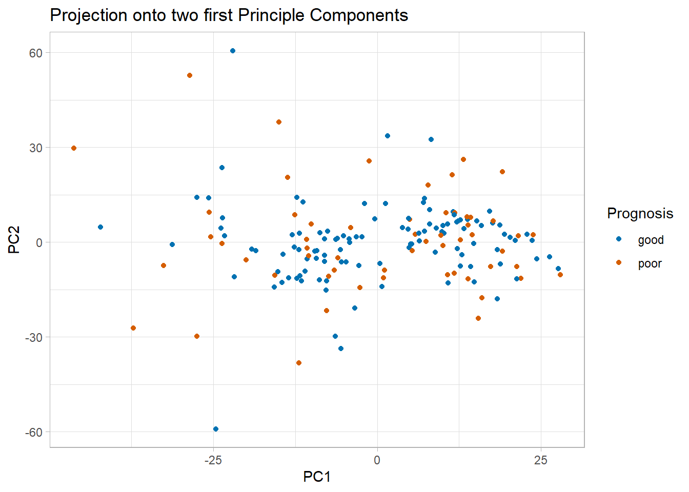

── Attaching core tidyverse packages ──────────────────────── tidyverse 2.0.0 ──
✔ dplyr 1.1.2 ✔ readr 2.1.4
✔ forcats 1.0.0 ✔ stringr 1.5.0
✔ ggplot2 3.4.3 ✔ tibble 3.2.1
✔ lubridate 1.9.2 ✔ tidyr 1.3.0
✔ purrr 1.0.2
── Conflicts ────────────────────────────────────────── tidyverse_conflicts() ──
✖ dplyr::filter() masks stats::filter()
✖ dplyr::lag() masks stats::lag()
ℹ Use the conflicted package (<http://conflicted.r-lib.org/>) to force all conflicts to become errors
library(broom)library(patchwork)library(ggrepel)
Load gravier dataset
We load the gravier dataset and extract x as a tibble. This contains the gene expression values which are all numeric and can be used for PCA. We also create a tibble combining the gene expressions and the prognosis early_metastasis for later use.
To make sure that we use numerical data, we select only the numerical columns. As expected, the number of columns is the same as before (2905 columns). With scale() we now center all column data around 0 and scale them to have a standard deviation of 1, so that the magnitude of the column values does not introduce a bias in the PCA directions. Now the dataset is ready for analysis and we perform PCA with the function prcomp().
Plot PCA projection onto first 2 principle components
The function augment() takes the PCA dataset and the full original dataset with the prognosis information and adds columns with data computed during PCA. In this case these are the projections of each data point onto the principle components, which was computed by multiplying each original data point with the eigenvector corresponding to each principle component. The output of the function is a tibble similar to gravier_all but with all projections (fittedPC1, fittedPC2, …) added as columns at the end of the dataset
We now use the projections onto the first two principle components as x and y for a scatterplot and color the points according to prognosis. If the two first principle components are able to separate the dataset according to prognosis, we should see two distinct clouds of data points.
gravier_PCA |>augment(gravier_all) |>ggplot(aes(.fittedPC1, .fittedPC2, color = early_metastasis) ) +geom_point(size =1.5) +scale_color_manual(values =c(poor ="#D55E00", good ="#0072B2") ) +theme_light()+labs(title ="Projection onto two first Principle Components",x ="PC1",y ="PC2",colour ="Prognosis")

We can see that the first two principle components are unable to separate the two prognosis classes.
Plot rotation matrix
We now extract the rotation matrix from gravier_PCA with the tidy() function, which returns a tibble. We transform the tibble with pivot_wide to have one column for each PCs and one row for each gene. However, if we try to plot now, we see a big smudge of color in the plot and nothing else, as we have 2905 genes of which the eigenvectors are plotted. To make a readable plot, we have to reduce the amount of genes we show. We take only the top 10 genes that have the greatest effect on the principal components. We calculate them by adding the absolute principal direction values (eigenvectors), because we are most interested in the genes showing the strongest associations with the principle components in both directions. We can use arrange(), which orders tibble rows according to the column values, and take the head(n=10) rows.
We extract the eigenvalues for calculating the variance explained by each principle component. We can see right away that even the first principle component can only explain around 8 percent of the data’s variability. We would need at least 77 principal components to explain 90 % of the variability, which is a substantial reduction in dimensions as compared to several thousands, however it does not make our data easier to plot.